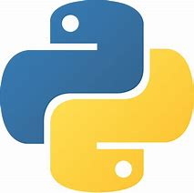
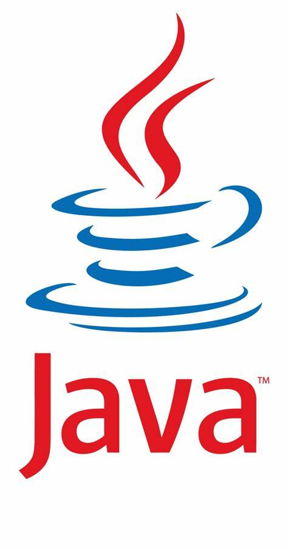
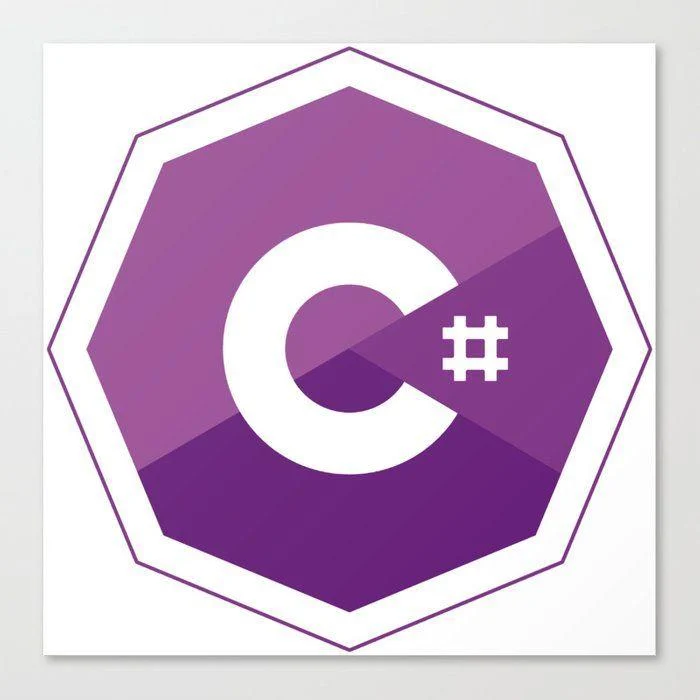

Algumas linguagens que ensinamos
Python
Python é uma linguagem de programação de alto nível, interpretada de script, imperativa, orientada a objetos, funcional, de tipagem dinâmica e forte. Foi lançada por Guido van Rossum em 1991
Java
Java é uma linguagem de programação orientada a objetos desenvolvida na década de 90 por uma equipe de programadores chefiada por James Gosling, na empresa Sun Microsystems, que em 2008 foi adquirido pela empresa Oracle Corporation. Diferente das linguagens de programação modernas, que são compiladas para código nativo, Java é compilada para um bytecode que é interpretado por uma máquina virtual. A linguagem de programação Java é a linguagem convencional da Plataforma Java, mas não é a sua única linguagem. A J2ME é utilizada em jogos de computador, celular, calculadoras, ou até mesmo o rádio do carro.
C#
A linguagem C# faz parte do conjunto de ferramentas oferecidas na plataforma .NET e surge como uma linguagem simples, robusta, orientada a objetos, fortemente tipada e altamente escalável a fim de permitir que uma mesma aplicação possa ser executada em diversos dispositivos de hardware, independentemente destes serem PCs, handhelds ou qualquer outro dispositivo móvel.
R
R é uma linguagem de programação multi-paradigma orientada a objetos, programação funcional, dinâmica, fracamente tipada, voltada à manipulação, análise e visualização de dados. Foi criado originalmente por Ross Ihaka e por Robert Gentleman no departamento de Estatística da Universidade de Auckland, Nova Zelândia. Atualmente é mantido por uma comunidade de colaboradores voluntários que contribuem com código fonte da linguagem e com a expansão de funcionalidades por bibliotecas.